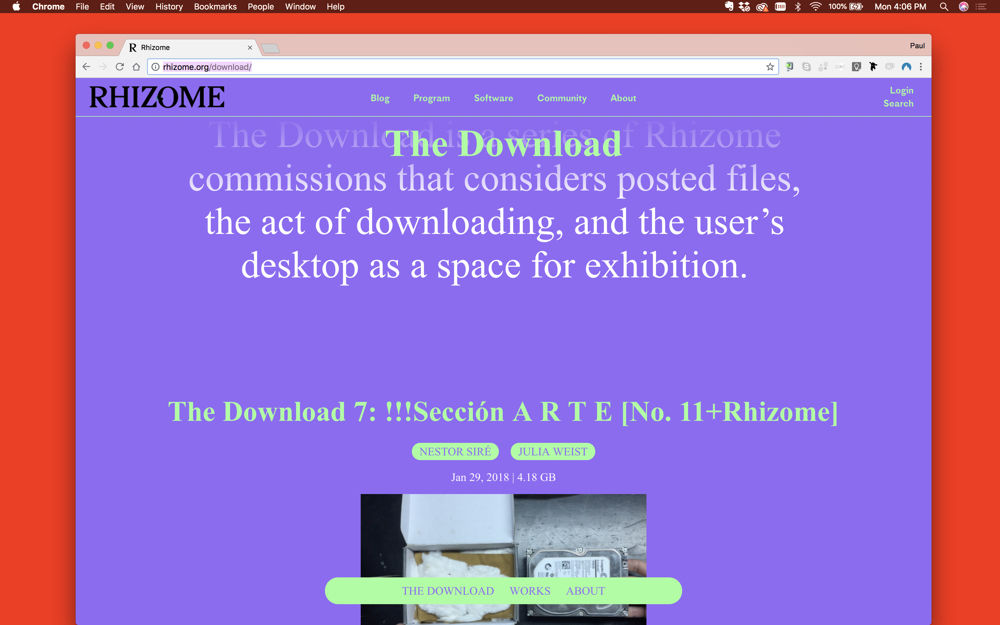
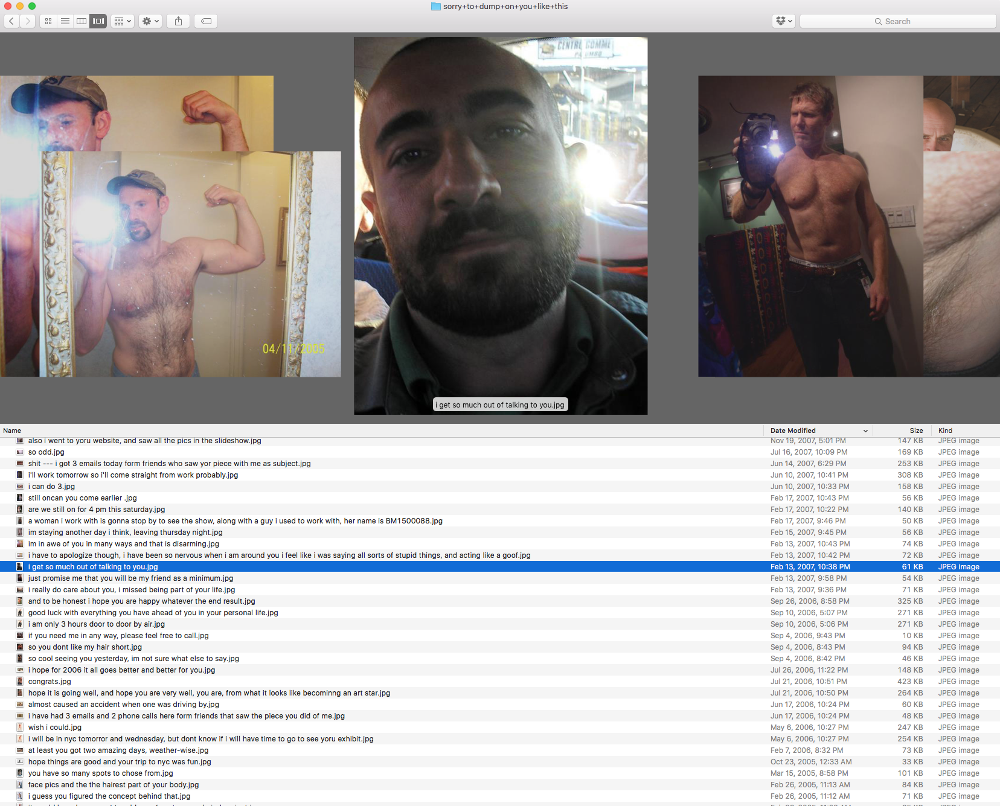

The Download for Rhizome (2015–ongoing)

To go beyond browsing, downloading must be considered.

Downloading is essential to almost any kind of engagement with the www, whether code is sent into a browser window or files are delivered to a desktop. To download is to take from the network and to navigate the choreography of circulation itself; when we download, we extend the file’s narrative—its time-stamped presence spanning any number of geo-located servers—into the intimate space of the hard drive. The download is a prerequisite to more local activities, like scanning, printing, dispersing, and archiving. Downloading can transform a public post into private property; to download may be political.

The browser typically acts as our portal to “the downloadable,” extending a view out onto distant servers and directories through the hyperlink. We can (almost) always download anything we see through the browser window, regardless of an artist’s intent, but while a browser-based work is meant to remain confined—performed into the user’s browser window for a temporal experience that is measured and dictated in certain ways by its publisher—the download allows the user’s experience to play out within the more private sphere of the desktop. The download involves agency.

To shift art out of the context of the browser and onto our desktop is an act of publishing—“making public” by dispersing copies of files and enjoying them locally (and privately). Artists who distribute downloadable work invite us to activate the computer desktop as an intimate, performative space for engaging with art.
The Download is an ongoing series of commissioned works curated by Paul Soulellis for Rhizome. The project presents posted files, the act of downloading, and the user’s desktop as the space of exhibition. Each artist’s contribution is zipped up and posted for download. The Download offers the JPG, the TXT, the PDF, and other file types by artists who view the file format itself as substrate. These works are free to own, print, share, and perform under your own conditions.
Commissioned works by—Christopher Clary, Morehshin Allahyari, Lance Wakeling, Elisa Giardina Papa, Dennis Cooper, Sheida Soleimani, Julia Weist and Nestor Siré
Project site